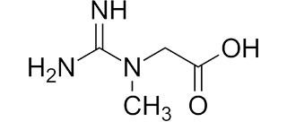

For vegetarians, especially those who work out, taking that extra step to make sure you're adding essential amino acids to your diet is paramount. After all, cutting meat from your diet comes at a cost, but that doesn't have to be your gains. Check out this list of pre- and post-workout supplements to help you fuel your workouts and reach your full fitness potential.
1

Creatine Monohydrate
only get through diet
Good for:storing energy
Daily dose5 g
Beta-Alanine
produced in muscle tissue
Good for:delay fatigue
Daily dose3 - 6 g
BCAAs
Drink before, during, and after workouts
Good for:suppress protein degradation
Daily dose10 - 15 g
Glutamine
Drink 10g before, and 10g after workouts
Good for:Supports immune system, regulate acid-base balance